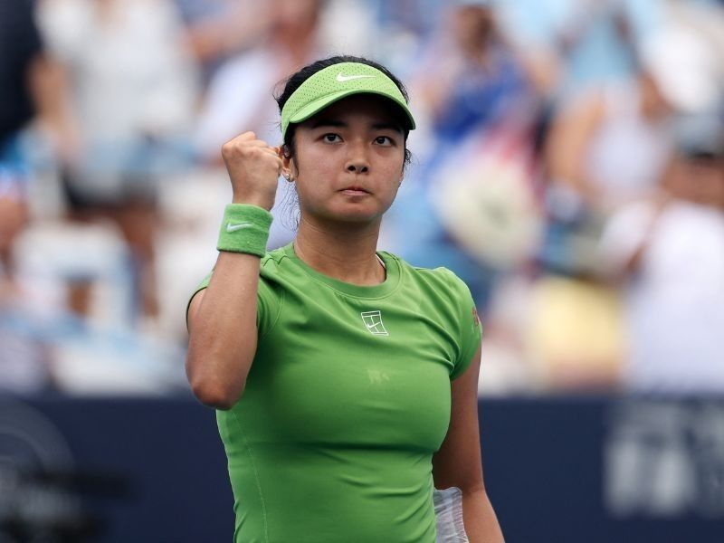

Zelenskyy and Trump agree to meet in New York during UNGA week
20 Sep 2026
Reuters / ABC / Anadolu: Ukrainian President Volodymyr Zelenskyy said Sunday he spoke with US President Donald Trump and the two agreed to meet in New York while both attend UN General Assembly high-level week. Zelenskyy called the conversation important, said “this meeting could change a lot,” and flagged diplomatic momentum on the peace track — including ideas on de-escalation, energy and food security, and civilian protection. He thanked Trump for the recent Kyiv visit by envoys Steve Witkoff and Jared Kushner, and again for signing the Lindsey Graham Russia–Iran sanctions law.
Open Reuters · Open ABC
Houthis seize Red Sea ground; Saudi–Houthi strikes escalate into UNGA week
20 Sep 2026
CNN: Iran-backed Houthis have taken key territory including a Red Sea island and coast overlooking Bab al-Mandab, worrying US and Gulf officials about chokepoint control. Saudi Arabia accused Houthis of targeting Mecca; Houthis claimed a Saudi F-15 shoot-down and weekend missile/drone attacks on Riyadh and an Aramco site in Yanbu. US State Department warned the conflict “has the potential to escalate rapidly”; the US Embassy in Riyadh restricted travel to Taif and Yanbu for US personnel. Diplomats arrive in New York under one of the most volatile Middle East security frames in recent years.
Open CNN
Iran warns of retaliation; Trump says he is in “deciding mode” on Tehran
20 Sep 2026
Al Jazeera / CNN: Iran’s central military command said Sunday it had information the US and regional partners could be preparing new action against Iran, and warned any attack would bring sustained strikes on US bases and on helpers treated as parties to the conflict. Trump told Fox he was in “deciding mode,” with three lanes — a deal, more economic pressure, or military action — while saying Washington remains in contact with the Houthis and is still avoiding direct US combat in Yemen. Iranian President Masoud Pezeshkian is expected at UNGA after the US approved travel for a core Iranian delegation.
Open Al Jazeera · Open CNN
UNGA high-level week opens Tuesday; Ukraine and Middle East dominate the corridor
20–21 Sep 2026
UN / The National: The 81st General Assembly high-level week runs 22–29 Sep in New York, with the general debate starting Tuesday 22 Sep. Corridor agenda: Ukraine peace track and Trump–Zelenskyy meeting, Iran–Yemen–maritime security, AI and climate side events, and UN financing/leadership questions. Saudi FM Prince Faisal bin Farhan leads a Gulf slate; several Gulf capitals send senior envoys alongside the Iranian core delegation.
Open UN News · Open The National
Remulla to parents: monitor children’s online activity after Banga school shooting
19 Sep 2026
Daily Tribune: DILG Secretary Jonvic Remulla urged parents to check what their children search and watch online after the Banga National High School shooting in South Cotabato (three dead Friday, including the student shooter; eight injured) — the third multi-death school shooting in 2026. He linked prior cases to deep-web exposure plus depression, said it is not a privacy issue when it is your child, and called for medical/psychiatric help and barangay–police presence around schools. Practical ask for ages 7–teens: know the apps, the search history, and who is in the chat — then talk, don’t only confiscate.
Open Tribune
DepEd to probe “true crime community” pull; Kaagapay parent lane still July–Nov
19 Sep 2026 (live desk)
GMA / Manila Times: Education Secretary Sonny Angara, on site in Banga, said DepEd will ask DICT and DILG to help investigate reports the shooter was in a “true crime community” that may have copied other attacks. Enhanced safety measures (more metal detectors, more counselor associates) are in the pipeline. The standing parent track remains Kaagapay (DepEd Memo 002) with Parent Effectiveness modules on red flags, bullying/cyberbullying, OSAEC, and Child Protection Committee referrals — sessions July–November including CALABARZON.
Open GMA · Open Manila Times

Eala No. 3 in Singapore: first-round bye; Round of 16 Wednesday
20 Sep 2026
Philstar / GMA / Spin.ph: World No. 18 Alex Eala is the No. 3 seed at the WTA 500 Singapore Tennis Open (21–27 Sep, OCBC Arena), behind Mirra Andreeva and Amanda Anisimova. Top-four bye sends her straight to the Round of 16 on Wednesday 23 Sep against the winner of Tatiana Prozorova vs Sofia Costoulas. First competitive week since a US Open Round of 32; Asian Games (Nagoya) follows later this month.
Open Philstar · Open GMA

Starship Flight 14: NET Sep 28 holds on public boards
17–19 Sep 2026
India Today / SpaceX: SpaceX’s retarget — Flight 14 as early as Monday 28 Sep, pending regulatory approval — remains the earliest public date. Mission profile still first orbital try (~275 km, ~six orbits), 26 Starlink V3 deploy, Pacific splashdown west of Chile, Super Heavy Gulf landing. Window listed around 7:15 a.m. CT / 5:45 p.m. IST. No fresh public explanation for the six-day slip from Sep 22.
Open India Today · Open SpaceX
Garmin Q3 update: “OK, Garmin,” Quick Workout, new Run Coach plans
1–2 Sep 2026 (live desk)
Gadgets & Wearables / About Run / Garmin: Free Q3 2026 software is rolling to Venu X1/4, vivoactive 6, Forerunner 570/970, fēnix 8 / E, Enduro 3, Instinct, and selected Edge units. Highlights: hands-free “OK, Garmin” voice control, Venu 4 fall detection, Quick Workout (time + intensity → suggested run), new lower-volume / run-walk Garmin Run Coach plans that adapt on recovery metrics, and XC Ski Indoor. Separate from the larger fēnix 9 feature backport still expected later.
Open Gadgets & Wearables · Open About Run